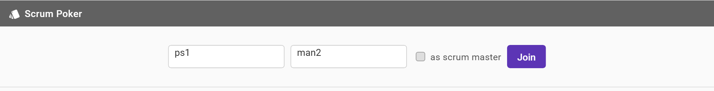
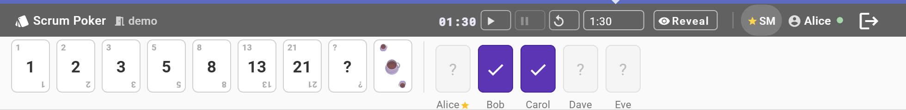
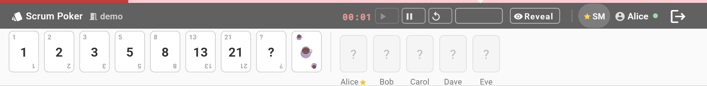
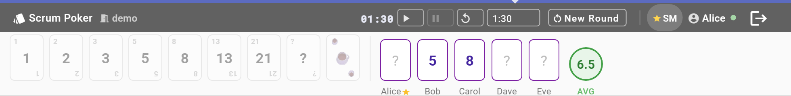
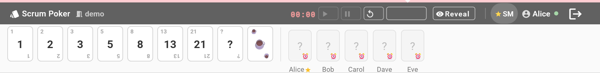

Getting started
On first visit you see the registration bar. Enter a room name (any text — shared with your team), your display name, and optionally tick "as scrum master". Then press Join or hit Enter.

- Your room, name and role are saved in
localStorageand pre-filled on reload — rejoin with one click. - Room names are case-insensitive. Anyone entering the same room name joins the same session.
- Two participants cannot have the same name in one room.
- Only one Scrum Master is allowed per room.
Voting
Click any card in the Fibonacci deck to cast your vote. You can change it at any time before the SM reveals.

| Card state | What it means |
|---|---|
| ? (light) | Participant has not voted yet |
| ✓ (purple) | Voted — value is hidden until reveal |
| Number | Value shown after Scrum Master reveals |
After a page refresh your vote is restored from the server — a network blip won't lose your selection.
Timer
The Scrum Master controls a countdown timer visible to everyone. The full-width progress bar below the toolbar changes colour as time runs out.

| Time remaining | Bar colour | Alert |
|---|---|---|
| > 30 s | 🔵 Blue | — |
| ≤ 30 s | 🟠 Orange | — |
| ≤ 10 s | 🔴 Red + pulse | Beep for unvoted participants |
| 0 s | — | Beep + snackbar for unvoted; miss badge recorded |
The timer runs on the server — all participants see the exact same countdown in real time.
Available durations: 30 s · 1 min · 1:30 · 2 min · 3 min · 5 min.
Reveal & New Round
When the SM clicks Reveal, all votes are shown simultaneously — preventing anchoring bias. The average (numeric votes only) appears as a circle chip in the team strip.

Click New Round to clear all votes and start estimating the next story. Miss counts and the Jira URL are preserved across rounds.
Deadline Miss Tracker
When the timer expires, any participant who hasn't voted gets a miss count. A playful emoji badge appears on their card — visible to everyone in the room.

Miss counts persist across rounds for the entire session. They only reset on server restart.
Jira Integration
The Scrum Master can paste a Jira issue URL into the input bar below the team strip. It is broadcast to all participants as a plain link that opens in a new tab.
- Paste the URL and click Load (or press Enter) to share it.
- Click the ✕ button next to the input to clear the link for everyone.
- Participants see the link immediately — no page reload needed.
Note: Jira Cloud blocks embedding in iframes (X-Frame-Options: DENY), so the issue opens in a new tab rather than inline.
Scrum Master Controls
The SM has extra controls in the toolbar and the team strip.
Toolbar
| Control | Action |
|---|---|
| ▶ Play | Start the countdown timer |
| ⏸ Pause | Pause the timer |
| 🔄 Reset | Reset timer to the selected duration |
| Duration dropdown | Set timer length (30 s – 5 min) |
| Reveal / New Round | Flip between estimation and discussion phases |
Removing a participant
Hover over any team member's card (other than your own) — it highlights red. Click to remove them from the session after confirmation. The removed user is taken back to the login screen and must rejoin manually.
Roles
| Role | How to join | Capabilities |
|---|---|---|
| Participant | Leave "as scrum master" unchecked | Vote, see team strip, see timer and Jira link |
| Scrum Master | Check "as scrum master" — one per room | All participant actions + timer controls, reveal, new round, Jira URL, remove participants |
Connection & presence
- A coloured dot next to your name shows connection status: green = connected, red = reconnecting.
- If you refresh the page you reconnect automatically within seconds — your vote is preserved.
- If you close the tab without logging out, you are automatically removed from the room after a 30-second grace period.
- Click Leave session (logout icon) to exit immediately.